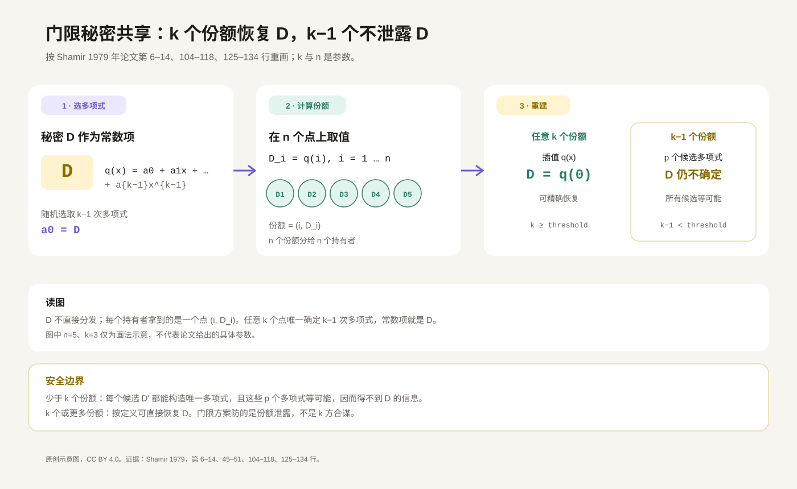
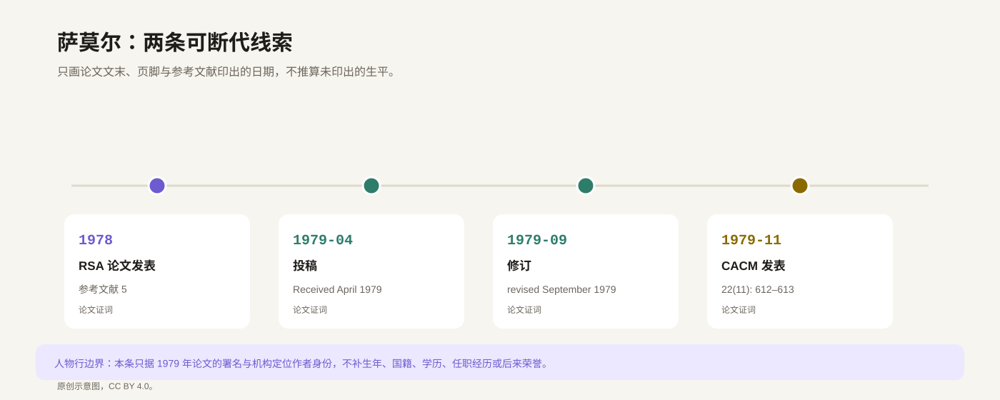

原理与机制
人物：阿迪·萨莫尔（Adi Shamir）。本行是人物行，其原理对应贡献而非算法叙述。HAC 第 76–77 行写「In 1978 Rivest, Shamir, and Adleman discovered the first」「practical public-key encryption and signature scheme, now referred to as RSA」，把萨莫尔定位为 RSA 的共同发明者之一。因此该条目只把 RSA 的共同发明归为三人，不独归本行，也不补来源未印出的生年、国籍、学历或任职经历；他在 1979 年提出的门限秘密共享写在下一节（为什么这样设计），依据该论文本身。
为什么重要
Shamir 1979 年论文「How to Share a Secret」把方案建立在多项式插值之上：论文写「Our scheme is based on polynomial' interpolation」，选取随机 k−1 次多项式，并令「in which ao=D」；随后计算「D~ = q(1) .....D i = q(i) .....D n = q(n).」。任意 k 个点可插值求出 q(x)，再「evaluate D=q(O).」；而「Knowledge of just k- 1 of these values」不足以算出 D。该条目只复述这套构造，不把拉格朗日插值的实现细节、有限域参数选择或后来的变体加入。

应用与实例
用途由论文印出：该技术「This technique enables the construction of robust key」「management schemes for cryptographic systems that」，可用于密钥管理，并「can function securely and reliably」。论文还给出 (3, n) 例子，使支票可「be signed either by any three executives, or by any」「two executives one of whom is a vice-president, or by」「the president alone.」。因此该条目只主张门限方案可用于密钥管理与门限授权，不称其在 1979 年已部署，也不把例子说成产品。
边界与攻击面
边界由定义与安全性论证印出：论文把目标写成「knowledge of any k or more D i pieces makes D」可算，而「knowledge of any k- 1 or fewer Di pieces leaves D」处于「completely undetermined (in the sense that all its」「possible values are equally likely).」。进一步的论证说，对每个候选 D′ 都能构造唯一多项式，因而「these p」「possible polynomials are equally likely」。因此该条目的边界是：门限方案防的是少于 k 片的泄露，不是 k 片或更多片合谋；留存件没有印出份额伪造、可验证共享或恶意分发者的处理。
历史与背景
可断代的坐标由论文印出：文末写「Received April 1979; revised September 1979」，页脚写「613 Communications November 1979」「of Volume 22」与「the ACM Number 11」。参考文献第 5 条又把 RSA 论文印成「Comm.A CM 21, 2」与「(Feb.1978), 120-126.」。因此该条目把该文断到 1979 年 4 月投稿、9 月修订、1979 年 11 月《Communications of the ACM》22 卷 11 期发表，并只把 RSA 1978 论文作为参考文献坐标，不据此改写 RSA 的发现史。

逐步示例与核验
角色关系模型
只登记四类关系：教育/任职机构、公开文本或专利、参与的标准/机器/事件、可核同行评价。每条关系都要有来源；没有来源的师承、奖项和私生活不进入模型。
参考出处
- Wikipedia search entry for 阿迪·萨莫尔. https://zh.wikipedia.org/w/index.php?search=%E9%98%BF%E8%BF%AA%C2%B7%E8%90%A8%E8%8E%AB%E5%B0%94
- MacTutor History of Mathematics Archive, University of St Andrews. https://mathshistory.st-andrews.ac.uk/
- MacTutor biography: Adi Shamir. https://mathshistory.st-andrews.ac.uk/Biographies/Shamir/